공조냉동기계산업기사 (2009-05-10 기출문제)
1과목: 공기조화
1. 아래 그림은 환기(R.A)와 외기(O.A)를 혼합한 후 가습하고 이 공기를 다시 가열하는 과정을 공기선도상에 표시한 것이다. 가습과정은?
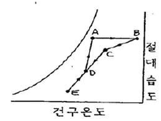
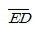
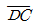
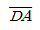
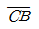
(정답률: 72%)

2. 가습방법 중 가습효율이 가장 높은 것은?
- 증발 가습
- 온수 분무 가습
- 증기 분무 가습
- 고압수 분무 가습
(정답률: 89%)
3. 다음 장치도 및 t-x 선도와 같이 공기를 혼합하여 냉각, 재열한 후 실내로 보낸다. 여기서, 외기부하를 나타내는 식은? (단, 혼합공기량은 G kg/h 이다.)
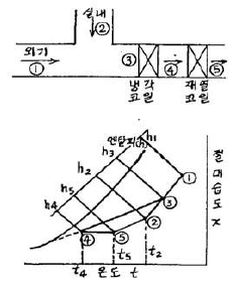
- q=G(h3-h4)
- q=G(h1-h3)
- q=G(h5-h4)
- q=G(h3-h2)
(정답률: 76%)
4. 다음 설명 중에서 틀리게 표현된 것은?
- 벽이나 유리창을 통해 들어오는 전도열은 감열뿐이다.
- 여름철 실내에서 인체로부터 발생하는 열은 잠열뿐이다.
- 실내의 기구로부터 발생열은 잠열과 감열이다.
- 건축물의 틈새로부터 침입하는 공기가 갖고 들어오는 열은 잠열과 감열이다.
(정답률: 87%)
5. 공조계획의 조닝(zonimg)에 있어서 내부 존에 해당되지 않는 것은?
- 관리별 조닝
- 부하변동별 조닝
- 용량별 조닝
- 방위별 조닝
(정답률: 71%)
6. 복사난방(판넬히이팅)의 특징을 설명한 것 중 맞지 않는 것은?
- 외기온도 변화에 따라 실내의 온도 및 습도조절이 쉽다.
- 방열기가 불필요하므로 가구배치가 용이하다.
- 실내의 온도분포가 균등하다.
- 복사열에 의한 난방이므로 쾌감도가 크다.
(정답률: 87%)
7. 창고의 공기조화에서 온습도 설정시 고려할 사항이 아닌 것은?
- 식품의 변질이나 건조에 의한 강량
- 금속의 녹방지
- 제품의 가격변동
- 곰팡이나 해충의 발생방지
(정답률: 93%)
8. 풍량 450m3/min, 정압 50mmAq, 회전수 600rpm인 다익 송풍기의 소요 동력 (kW)은 약 얼마인가? (단, 정압효율은 50%이다.)
- 3.5kW
- 7.4kW
- 11kW
- 15kW
(정답률: 68%)
9. 공기 - 물 공기조화 방식에 해당하는 것은?
- 2중 덕트 방식
- 패키지 냉난방 방식
- 복사 냉난방 방식
- 정풍량 단일 덕트 방식
(정답률: 60%)
10. 공기조화기(A.H.U)와 관계가 없는 것은?
- 송풍기
- 냉각탑
- 에어필터
- 냉각코일
(정답률: 75%)
11. 난방방식에 관한 설명 중 옳은 것은?
- 증기난방은 복사 열전달이 주로 이용된다.
- 온수난방은 간접난방이다.
- 직접난방은 재류난방의 한 가지 형식이다.
- 복사난방은 다른 난방방식에 비교하여 쾌감도가 좋다.
(정답률: 88%)
12. 2중 덕트 방식의 특징 중 옳지 않은 것은?
- 실내부하에 따라 개별제어가 가능하다.
- 2중 덕트이므로 덕트 스페이스는 적게 된다.
- 실내습도의 완전한 제어가 어렵다.
- 냉풍 및 온풍이 열매체이므로 실내온도 변화에 대한 응답이 빠르다.
(정답률: 74%)
13. 다음 중 냉각코일을 결정하는 부하가 아닌 것은?
- 실내취득열량
- 외기부하
- 기기취득열량
- 펌프, 배관부하
(정답률: 79%)
14. 흡수식 냉온수기를 이용하는 열원시스템의 설명으로 맞지 않는 것은?
- 1대로 냉방과 난방을 경용하므로 기계실의 스페이스를 적게 차지한다.
- 냉각탑을 포함하는 열원장치의 건설비는 전동냉동기와 보일러 병용방식에 비해 비싸다.
- 병원과 같이 고압증기를 필요로 할 때에는 1중 효용식과 보일러 조합 방식을 사용한다.
- 사용연료로서는 도시가스가 이상적이고 직화식버너를 사용한다.
(정답률: 44%)
15. 축열조 내에 코일을 설치하고 그 주위에 물이 채워져 있어서 제빙시 코일 내부에 저온의 브라인을 순환시켜 코일 주위에 물이 얼게 되며, 해방시에는 코일 외부로 물이 흐르게 되어 얼음을 녹게 하는 원리를 이용하는 빙축열 시스템의 제빙 방식은?
- 관외 착빙형
- 캡슐형
- 빙박리형
- 관내 착빙형
(정답률: 80%)
16. 자연환기에 관한 다음의 설명 중 틀린 것은?
- 주로 풍력과 건물내외의 온도차에 의해 생긴다.
- 환기량은 급기구 및 배기구의 위치에 무관하다.
- 환기횟수는 1시간당의 환기량을 방의 체적으로 나눈 값이다.
- 모니터는 공장 등에서 다량의 환기량을 얻고자 할 때 지분 등에 설치한다.
(정답률: 79%)
17. 건구온도 t1=10℃, 절대습도 x=0.006 kg/kg'인 1000kg/h의 공기를 건구온도 t2=30℃까지 가열할 때 가열량은? (단, h1=6 kcal/kg, h2=10.82 kcal/kg, Cp=0.241kcal/kg,℃이다.)
- 3660[kcal/h]
- 6220[kcal/h]
- 4820[kcal/h]
- 7120[kcal/h]
(정답률: 55%)
18. 공조기 내에 흐르는 냉ㆍ온수 코일의 유량이 많아서 코일 내에 유속이 너무 클 때 사용하는 코일은?
- 풀서킷 코일(full circuit coil)
- 더블서킷 코일(double circuit coil)
- 하프서킷 코일(half circuit coil)
- 슬로서킷 코일(slow circuit coil)
(정답률: 84%)
19. 원통 다관형(shell and tube) 열교환기의 특징으로 맞지 않는 것은?
- 단상, 응축, 증발 열전달에 모두 이용 가능
- 허용 압력 강하치가 광범위하고 탄력적임
- 소제나 수리를 위한 분해가 어려움
- 크기 및 재료선택이 다양 함
(정답률: 69%)
20. 포화공기에 대한 설명 중 옳은 것은?
- 높은 온도의 공기
- 수증기로 충만된 공기
- 압력이 높은 공기
- 건조 공기
(정답률: 81%)
2과목: 냉동공학
21. 동부착 현상이 일어나기 쉬운 순서대로 나열된 것은?
- R-12 → R-22 → CH3Cl
- R-22 → R-12 → CH3Cl
- CH3Cl → R-22 → R-12
- CH3Cl → R-12 → R-22
(정답률: 52%)
22. 수증기를 열원으로 하여 냉방에 적용시킬 수 있는 냉동기는 어느 것인가?
- 원심식 냉동기
- 왕복식 냉동기
- 흡수식 냉동기
- 터보식 냉동기
(정답률: 77%)
23. 온도식 팽창밸브(Thermostatic expansion valve)에 있어서 과열도란 무엇인가?
- 고압측 압력이 너무 높아져서 액냉매의 온도가 충분히 낮아지지 못할 때 정상시와의 온도차
- 팽창밸브가 너무 오랫동안 작용하면 밸브 사이트가 뜨겁게 되어 오동작할 때 정상시와의 온도차
- 흡입관내의 냉매가스 온도와 증발기내의 포화온도와의 온도차
- 압축기와 증발기속의 온도보다 1℃ 정도 높게 설정되어 있는 온도와의 온도차
(정답률: 76%)
24. 간접 냉각시 냉동장치에 사용하는 2차 냉매로서 brine을 사용한다. 이 brine에 필요한 성질 중 틀린 것은?
- 비열과 열전도율이 적고 열전달에 대한 특성이 없을 것
- 점성이 적고 순환 pump의 동력 소비가 적을 것
- 동결점이 낮을 것
- 냉동장치의 구성부분을 부식시키지 않을 것
(정답률: 75%)
25. 다음과 같이 증발온도 -30℃, 냉동능력 3RT인 냉장실과 증발온도 0℃, 냉동능력 1.5RT인 냉장실용 준비실을 1대의 R12냉동장치로서 냉각한다. 각 실의 증발기 출구의 과열도는 ℃이고 응축온도는 35℃이며, 팽창변 직전액의 과냉각도를 5℃라고 한다면, 필요 냉매순환량은 얼마인가?
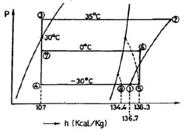
- 254.5(kgf/h)
- 494.5(kgf/h)
- 503.0(kgf/h)
- 522.6(kgf/h)
(정답률: 29%)
26. 프레온 냉동장치에서 가용전(Fusible plug)은 주로 어디에 설치하는가?
- 열교환기
- 증발기
- 수액기
- 팽창밸브
(정답률: 75%)
27. 0.02kg의 기체에 100J의 일을 가하여 단열 압축하였을 때 기체 내부에너지 변화는?
- 1.875kcal/kg
- 1.547kcal/kg
- 1.391kcal/kg
- 1.195kcal/kg
(정답률: 43%)
28. 다음은 증발식 응축기에 관한 설명이다. 잘못된 것은?
- 구조가 간단하고 압력강하가 작다.
- 일반 수냉식에 비하여 전열 작용이 나쁘다.
- 대기의 습구온도 영향을 많이 받는다.
- 물의 증발 잠열을 이용하여 냉각하므로 냉각수가 적게 든다.
(정답률: 51%)
29. 가역 냉동기의 냉동능력이 100RT이며, -5℃와 +20℃ 사이에서 작동하고 있다. 이 냉동기의 성적 계수는 얼마인가?
- 10.7
- 12.7
- 14.4
- 16.4
(정답률: 43%)
30. 기통직경 70mm, 행정 60mm, 기통수 8, 매분회전수 1800인 단단 압축기의 피스톤 압출량(m3/h)은 얼마인가?
- 65
- 132
- 168
- 199
(정답률: 51%)
31. 식품냉동에서의 T.T.T란 무엇인가?
- 시간(Time), 내성(Tolerance), 맛(Taste)
- 시간(Time), 온도(Temperature), 내성(Tolerance)
- 온도(Temperature), 내성(Tolerance), 맛(Taste)
- 온도(Temperature), 맛(Taste), 기간(Term)
(정답률: 75%)
32. 0℃의 얼음 1kg을 100℃의 수증기로 바꾸는데 필요한 열은 약 얼마인가?
- 539kcal
- 640kcal
- 720kcal
- 820kcal
(정답률: 49%)
33. 대용량의 저온 냉장실이나 급속동결장치에 사용하기에 가장 적당한 것은?
- 건식 증발기
- 반만액식 증발기
- 만액식 증발기
- 액순화식 증발기
(정답률: 49%)
34. 냉동장치의 운전상태 점검시 중요하기 않은 것은?
- 운전 소음 상태
- 윤활유의 상태
- 냉동장치 각부의 온도 상태
- 냉동장치 전원의 주파수 변동 상태
(정답률: 78%)
35. 냉동장치의 안전장치가 아닌 것은?
- 안전밸브
- 가용전, 파열판
- 고압차단스위치
- 응축압력 조절밸브
(정답률: 72%)
36. 다음 설명 중 옳지 못한 것은?
- 불응축가스는 응축기에 모이기 쉽다.
- 액압축은 과열도가 클 때 일어나기 쉽다.
- 불응축가스는 진공건조의 불충분이 원인인 것이 많다.
- 밀폐형 압축기는 누설의 염려가 적으나 전기 절연도가 좋은 냉매를 사용하여야 한다.
(정답률: 54%)
37. 전자밸브를 설치할 때 주의사항으로 틀린 것은?
- 전압과 용량에 맞추어 설치되었는지 확인한다.
- 코일부분이 하부로 오도록 수평하게 설치되었는지 확인 한다.
- 본체의 유체 방향에 맞추어 설치되었는지 확인한다.
- 밸브 입구에 여과기가 설치되었는지 확인한다.
(정답률: 80%)
38. 다음 중 실제기체가 이상기체의 상태식을 근사적으로 만족하는 경우는?
- 압력이 높고 온도가 낮을 수록
- 압력이 높고 온도가 높을 수록
- 압력이 낮고 온도가 높을 수록
- 압력이 낮고 온도가 낮을 수록
(정답률: 76%)
39. 냉방용 축열장치의 종류가 아닌 것은?
- 수축열 방식
- 빙축열 방식
- 잠열 축열 방식
- 유 축열 방식
(정답률: 67%)
40. 증기 압축식 냉동 사이클에서 팽창밸브를 통과하여 증발기에 유입되는 냉매의 엔탈피를 A, 증발기 출구 건조증기 상태 엔탈피를 C라 할 때 팽창밸브를 통과한 직후 증기로 된 냉매의 양은?
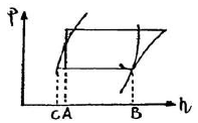
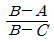
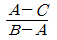
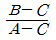
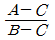
(정답률: 62%)
3과목: 배관일반
41. 급탕 배관에서 보통 직관의 길이가 몇 m마다 1개의 신축 이음을 설치할 필요가 있는가?(문제 오류로 가답안 발표시 4번으로 발표되었지만 확정답안 발표시 3, 4번이 정답 처리 되었습니다. 여기서는 가답안인 4번을 누르면 정답 처리 됩니다.)
- 5
- 10
- 20
- 30
(정답률: 62%)
42. 냉각탑 주위배관시 유의사항 중 틀린 것은?
- 2대 이상의 개방형 냉각탑을 병열로 연결할 때 냉각탑의 수위를 동일하게 한다.
- 개방형 냉각탑은 냉각탑의 수위를 펌프와 응축기보다 낮은 곳에 설치한다.
- 냉각탑을 동절기에 운전할 때는 동결방지를 고려한다.
- 냉각수 출입구측 배관은 방진이음을 설치하여 냉각탑의 진동이 배관에 전달되지 않도록 한다.
(정답률: 70%)
43. 개별식(국소식)급탕방식의 특징으로 틀린 것은?
- 배관설비 거리가 짧고 배관 증 열손실이 적다.
- 급탕장소가 많은 경우 시설비가 싸다.
- 수시로 급탕하여 사용할 수 있다.
- 건물의 완성 후에도 급탄장소의 증설이 비교적 쉽다.
(정답률: 80%)
44. 배관의 지지 목적이 아닌 것은?
- 배관계의 중량의 지지
- 진동에 의한 지지
- 열에 의한 신축의 제한 지지
- 부식과 보온 지지
(정답률: 82%)
45. 급수배관에서 워터해머 방지 또는 경감시키는 방법으로 옳지 않은 것은?
- 급격히 개폐되는 밸브의 사용을 제한한다.
- 피스톤형, 벨로즈형, 다이어프램형 등의 워터해머 흡수기를 설치한다.
- 관내의 유속을 1.5~2m/s 정도로 제한한다.
- 배관은 가능한 구부러지게 한다.
(정답률: 84%)
46. 방열기의 환수관이나 증기 배관의 말단에 설치하고 응축수나 공기를 증기와 분리하는 장치는?
- 배수 트랩
- 전자 밸브
- 팽창 밸브
- 증기 트랩
(정답률: 74%)
47. 냉매액관 시공기의 유의점이 아닌 것은?
- 액관의 마찰손실압력을 0.2kg/cm2 이하로 제한한다.
- 액관내의 유속은 0.5~1.5m/s 정도로 한다.
- 액관 배관은 가능한 길게 한다.
- 2대 이상의 증발기를 사용하는 경우, 액관에서 발생한 증발가스는 균등하게 분배되도록 배관한다.
(정답률: 84%)
48. 다음 동관 중 가장 높은 압력에서 사용되는 관은?
- K형
- L형
- M형
- N형
(정답률: 77%)
49. 다음은 증기난방 배관 시공법에 관한 설명이다. 틀린 것은?
- 분기관은 주관에 대해 45° 이상으로 취출해 낸다.
- 고압증기의 환수관을 저압증기의 환수관을 접속하는 경우 증발탱크를 경유시킨다.
- 이경 증기관 접합 시공기 편심 이경 조인트를 사용하여 응축수의 고임을 방지한다.
- 암거내 배관시에는 밸브 트랩 등을 가능하면 맨홀 근처에서 멀게 집결시킨다.
(정답률: 74%)
50. 유속 2.4m/sec, 유량 15000ℓ/h 일 때 관경을 구하면 몇 mm 인가?
- 42
- 47
- 51
- 53
(정답률: 56%)
51. 배수 배관에서 관경이 100A 이상인 경우 청소구를 몇 m 마다 설치하는가?
- 30
- 50
- 70
- 90
(정답률: 55%)
52. 공동주택에서의 급수 허용 최고 사용압력은?
- 1~2 kgf/cm2
- 3~4 kgf/cm2
- 6~8 kgf/cm2
- 9~10 kgf/cm2
(정답률: 56%)
53. 다음 중 KS 배관 도시 기호에서 리듀서 표시는?
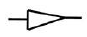
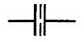
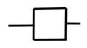
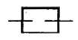
(정답률: 81%)
54. 배관 내 마찰 저항에 의한 압력 손실의 설명으로 옳은 것은?
- 관의 유속에 비례한다.
- 관 내경의 2승에 비례한다.
- 관 내경의 5승에 비례한다.
- 관의 길이에 비례한다.
(정답률: 61%)
55. 암모니아 냉동설비의 배관으로 사용하지 못하는 것은?
- 배관용 탄소강 강관
- 이음매 없는 동관
- 저온 배관용 강관
- 배관용 스테인리스 강관
(정답률: 87%)
56. 옥내 파이프가 옥외 파이프로 연결되어 있을 때 옥외 파이프에서 발생한 유취, 유해가스가 옥내 파이프로 역류하는 것을 방지하는 것은?
- 배수트랩
- 신축조인트
- 팽창밸브
- 턴버클
(정답률: 82%)
57. 지름 20mm 이하의 동관을 이음할 때나 기계의 점검, 보수 등으로 관을 떼어내기 쉽게 하기 위한 동관의 이음방법은?
- 슬리브 이음
- 플레어 이음
- 사이징 이음
- 플라스탄 이음
(정답률: 82%)
58. 흡수식 냉동기 주변배관에 대한 설명으로 틀린 것은?
- 증기조절밸브와 감압밸브장치는 가능한 냉동기 가까이에 설치한다.
- 공급 주관의 응축수가 냉동기내에 유입되도록 한다.
- 증기관에는 신축이음 등을 설치하여 배관의 신축으로 방생하는 응력이 냉동기에 전달되지 않도록 한다.
- 증기 드레인 제어방식은 진공펌프로 냉동기내의 드레인을 직접 압출하도록 한다.
(정답률: 69%)
59. 배수관에 설치하는 트랩에 관한 내용으로 틀린 것은?
- 트랩의 유효수심은 관내 압력 변동에 따라 다르나 최저 50mm가 필요하다.
- 트랩의 봉수 깊이가 100mm 이상 되면 트랩 내에 오물이 쌓이기 쉽다.
- 트랩의 봉수파괴 원인은 사이폰 작용, 흡출작용, 봉수의 증발 등이 있다.
- 트랩의 봉수깊이는 가능한 한 깊게 하여 봉수가 유실되는 것을 방지한다.
(정답률: 79%)
60. 가스배관에서 가스공급을 중단시키지 않고 분해ㆍ점검할 수 있는 것은?
- 바이패스관
- 가스미터
- 부스터
- 수취기
(정답률: 79%)
4과목: 전기제어공학
61. 그림과 같은 파형의 파고율은 얼마인가?
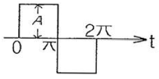
- 1
- √2
- √3
- 2
(정답률: 47%)
62. 다음 중 프로세스 제어에 속하는 것은?
- 장력
- 압력
- 전압
- 저항
(정답률: 73%)
63. 전압, 주파수 등의 제어를 자동조정이라 하는데 이는 주로 어디에 속하는가?
- 서보기구
- 공정제어
- 추치제어
- 정치제어
(정답률: 43%)
64. 그림과 같은 블럭선도와 등가인 것은?
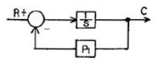
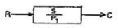
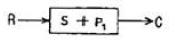
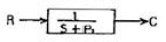
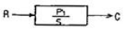
(정답률: 71%)
65. 1kW의 전열기를 1시간 동안 사용한 경우 발생한 열량은 몇 [kcal] 인가?
- 36
- 86
- 360
- 860
(정답률: 77%)
66. 자기인덕턴스 L1, L2 상호인덕턴스 M의 코일을 같은 방향으로 직렬 연결한 경우, 합성인덕턴스는?
- L1+L2-M
- L1+L2+M
- L1+L2+2M
- L1+L2-2M
(정답률: 54%)
67. 바리스터(Varistor)란?
- 비직선적인 전압-전류 특성을 갖는 2단자 반도체
- 비직선적인 전압-전류 특성을 갖는 3단자 반도체
- 비직선적인 전압-전류 특성을 갖는 4단자 반도체
- 비직선적인 전압-전류 특성을 갖는 리액턴스 소자이다.
(정답률: 76%)
68. 전류 i=3t2+6t를 어떤 전선에 5초 동안 통과시켰을 때 전기량은 몇 [C] 인가?
- 140
- 160
- 180
- 200
(정답률: 47%)
69. 분상기동형 단상유도전동기를 역회전시키는 방법은?
- 주권선과 보조권선 모두를 전원에 대하여 반대로 접속한다.
- 콘덴서를 주권선에 삽입하여 위상차를 갖게 한다.
- 콘덴서를 보조권선에 삽입한다.
- 주권선과 보조권선 중 하나를 전원에 대하여 반대로 접속한다.
(정답률: 79%)
70. 3상 교류전압 및 주파수를 변화시켜 유도전동기의 회전수를 1750rpm으로 하고자 한다. 이 경우 “회전수”는 자동제어계의 구성요소 중 어느 것에 해당하는가?
- 제어량
- 목표값
- 조작량
- 제어대상
(정답률: 47%)
71. 다음 중 프로그램형 제어기의 강전(强電)출력이 아닌 것은?
- 프린터
- 전동기
- 계전기
- 솔레노이드
(정답률: 71%)
72. 2대의 단상변압기를 병렬운전할 때 다음 중 병렬운전의 필수 조건이 아닌 것은?
- 극성이 같을 것
- 용량이 같을 것
- 권수비가 같을 것
- %임피던스 강하가 같을 것
(정답률: 59%)
73. 2전력계법으로 전력을 측정하였더니 P1=4W, P2=3W이었다면 부하의 소비전력은 몇 [W] 인가?
- 1W
- 5W
- 7W
- 12W
(정답률: 75%)
74. 120°를 라디안[rad]으로 표시하면?
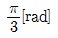
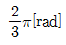
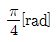
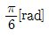
(정답률: 65%)
75. 다음의 논리식 중 다른 값을 나타내는 논리식은?
- XY + X(Y)'
- X(X+Y)
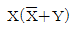
- X+XY
(정답률: 72%)
76. 유도전동기의 역률을 개선하기 위하여 일반적으로 많이 사용되는 방법은?
- 조상기 병렬접속
- 콘덴서 병렬접속
- 조상기 직렬접속
- 콘덴서 직렬접속
(정답률: 82%)
77. 센서를 변위센서, 속도센서, 열센서, 광센서로 분류하였다. 분류방법으로 알맞은 것은?
- 계측의 대상
- 계측의 형태
- 소자의 재료
- 변환의 원리
(정답률: 72%)
78. 유도전동기의 속도제어 방법이 아닌 것은?
- 극수변환
- 주파수제어
- 전기자 전압제어
- 2차 저항 제어
(정답률: 30%)
79. 제어계에서 제어기의 전달함수가
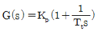
로 주어질 때 이에 대한 설명으로 옳지 않은 것은?- 이 제어기는 비례-적분 제어기이다.
- 이 제어기는 지상보상요소이다.
- 이 제어기의 정상편차는 없다.
- Kp는 비례강도, TI는 리셋률(Reset rate)이다.
(정답률: 53%)
80. 2진수 0011 1011 1111 1010(2)을 16진스로 변환하면?
- 3BFA
- 27AB
- C16
- 3CF9
(정답률: 57%)